Data is highly decentralized
- Produced by governments, companies, individuals, …
- Stored at different locations across the world
- Consumed through interactive applications, processes, intelligent agents, …
Decentralized data integration is challenging for application developers
-
Discovering data
How can I find data sources? How can I find data within a source?
-
Combining data
How to combine data across different data sources?
-
Preserving privacy
How to not leak sensitive data?
Query engines abstract access to decentralized data
Hide the complexities of reading and writing for app developers
↔
↔
Image credit
SPARQL processing over centralized data
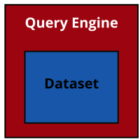
Centralization not always possible
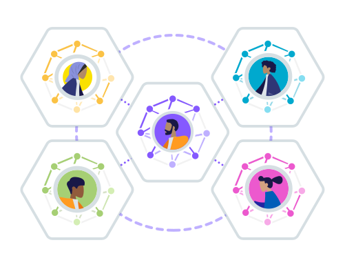
-
Private data
Technical and legal reasons
-
Evolving data
Requires continuous re-indexing
-
Web scale data
Indexing the whole Web is infeasible (for non-tech-giants)
How to query over decentralized data?
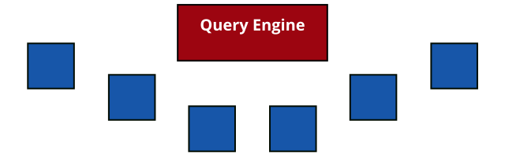
-
Data and query engine are not collocated
Query engine runs on a separate machine
-
Not just one datasets
Data is spread over the Web into multiple data sources
Approaches for querying over decentralized data
-
Federated Query Processing
Distributing query execution across known sources
-
Link Traversal Query Processing
Local query execution over sources that are discovered by following links
Federated querying: Distribute query over query APIs
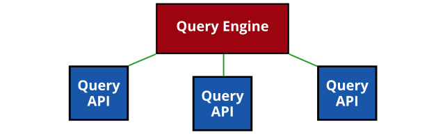
-
Clients do limited effort
Split up the query, distribute it (source assignment), and combine results
-
Servers perform most of the effort
They actually execute the queries, over potentially huge datasets
Link Traversal: Exploit interlinking of documents
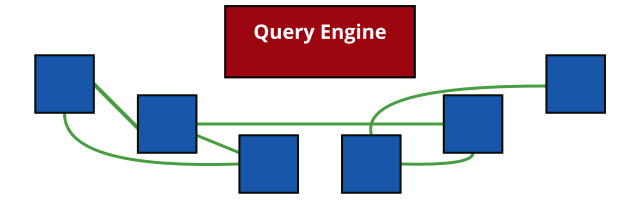
-
Linked Data documents are linked to each other
Following the Linked Data principles
-
Query engine can follow links
Start from one document, and discover new documents on the fly
Queries as abstraction layer for integration
SPARQL, GraphQL, ...
-
Say what needs to happen, not how
Declarative queries hide complexities of data retrieval
-
Queries are reusable
Queries are not API-specific
-
Execution via a generic, reusable query engine
Abstracts away complexities for executing queries
New optimisations can be used by merely updating query engine
Heterogeneity and Federation
-
Understanding any source
Give it any URL, and Comunica will aim to query it as efficient as possible
Linked Data documents, Triple Pattern Fragments, SPARQL endpoints, ...
-
Combining multiple sources through federated querying
Data can be spread over multiple sources
-
Source discovery through link traversal (experimental)
All relevant sources may not always be known beforehand
For fully decentralised data (Solid)
Flexible and Modular Meta-Query Engine
-
Collection of building blocks
330+ independent modules implement specific functionality
-
Combining building blocks
Building custom query engines with specific functionality and settings
Using a flexible configuration system
Presets: Comunica SPARQL, Comunica Solid, ...
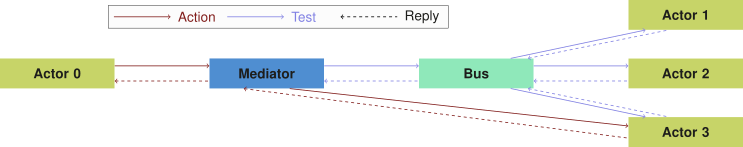
Comunica is production-ready
-
Extensively tested (continuous integration)
7.286 unit tests with coverage of 100%
30 large engine-wide integration tests
Fully spec-compliant: 1.283 SPARQL (1.0,1.1,1.2) W3C specification tests
-
High performance
Comparable to in-memory centralized engines (up to ~35M triples)
Continuous performance measurements in CI
-
Widely used
400.000+ monthly npm downloads
1.600+ dependents on GitHub
Default Comunica engines
-
Comunica SPARQL
Query over one or more SPARQL endpoints, TPF interfaces, RDF files, …
-
Comunica SPARQL RDF/JS Lite
Limited build for querying within browser environments
-
Comunica SPARQL Link Traversal
Link traversal over Linked Data documents and Solid pods
-
Comunica SPARQL HDT
Query over HDT files
-
Comunica MCP
MCP wrappers over most Comunica engines for interaction with AI agents
Query in the browser
-
Client-side querying of sources using SPARQL or GraphQL
Query on the command line
-
Installing Comunica SPARQL globally
$ npm install -g @comunica/query-sparql
-
Running a SELECT query
$ comunica-sparql https://fragments.dbpedia.org/2016-04/en \
"SELECT * WHERE { ?s ?p ?o } LIMIT 100"
-
Running a CONSTRUCT query
$ comunica-sparql https://fragments.dbpedia.org/2016-04/en \
"CONSTRUCT WHERE { ?s ?p ?o } LIMIT 100"
Learn more: https://comunica.dev/docs/query/getting_started/query_cli/
Query in an JavaScript/TypeScript app
-
Installing Comunica SPARQL locally
$ npm install @comunica/query-sparql
-
Creating a new engine
const myEngine = new QueryEngine();
-
Running a SELECT query
myEngine.queryBindings(`SELECT...`, { sources: [ 'https...' ]});
Learn more: https://comunica.dev/docs/query/getting_started/query_app/
-
Getting started guides
Tutorials on how to use Comunica in different ways
-
Modification guides
Tutorials on how to modify and configure custom query engines
-
Internal details
In-depth documentation on the internals and architecture
The future of RDF and SPARQL
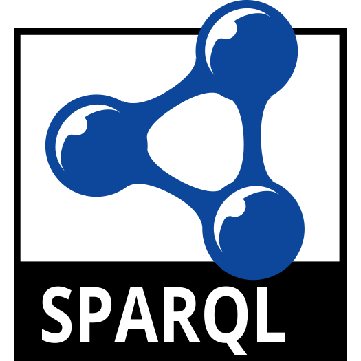
-
Contributing to RDF and SPARQL W3C working group
Towards RDF and SPARQL 1.2
-
And towards SPARQL 1.3
Better list support, lateral joins, rate limit announcement, …
Federation over heterogeneous sources
-
Public SPARQL endpoints have low availability (95%)
~1.5 days downtime per month!
Due to high query expressivity is high and public nature
-
Alternative interfaces besides SPARQL endpoints
Linked Data Fragments: TPF, WiseKG, brTPF, Passage, ...
Different levels of server expressivity
-
Trade-off between server and client effort
Low-cost publishing prevents server availability issues
Executing parts of queries client-side
Federated querying over public endpoints in practise does not work due to restrictions
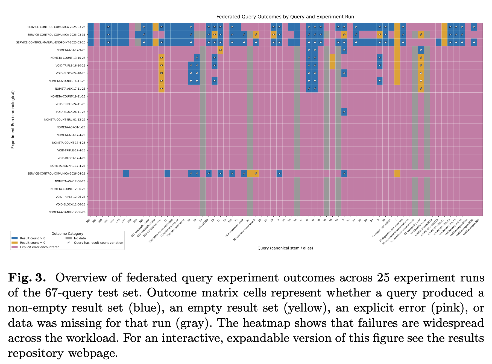
Link Traversal: too slow for querying over Linked Open Data
-
Massive number of possible links on the open Web
New content is produced faster than you can follow links
-
Inefficient query plans
Traversal engine can not optimize sufficiently due to lack of statistics
Link Traversal becomes feasible with structural assumptions
-
Environments with structural properties
Subsets of the Web that follow specific structures
-
Traversal engines can make additional assumptions
Assumptions about how data is structured and interlinked
→ Guided link traversal (Taelman 2023)
Solid pods follow structural properties
-
Pod contents listed through as REST API
Linked Data Platform
-
WebID profile
User name and link to storage
-
Type index
Type-based resource discovery
Query results arrive incrementally
within human attention limits
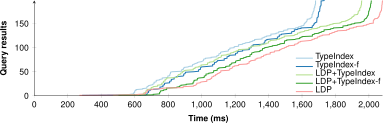
If pods expose more information, complex querying can become faster
-
When following links, engines can discover optimizations
If pods expose them
-
A pod can guide engines more efficiently towards relevant data
Type indexes, shape trees, shape indexes, …
-
Cross-pod indexes can prune out irrelevant pods
Aggregations or summarization of data across collections of pods
Dangers: staleness, trust, censorship, …
Pods exposing shape information allows query engines to skip many links
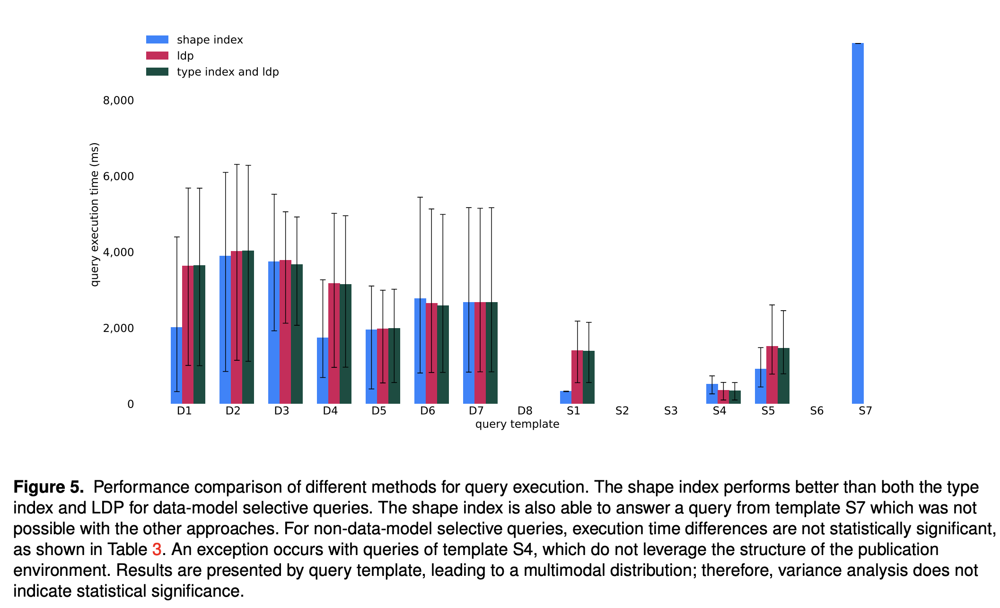
Pods exposing cardinality information allows engines to make better query plans
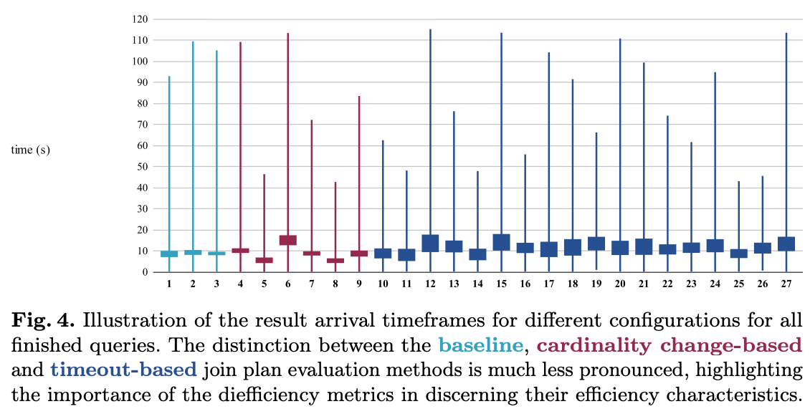
Client-side caching across improves performance within user sessions
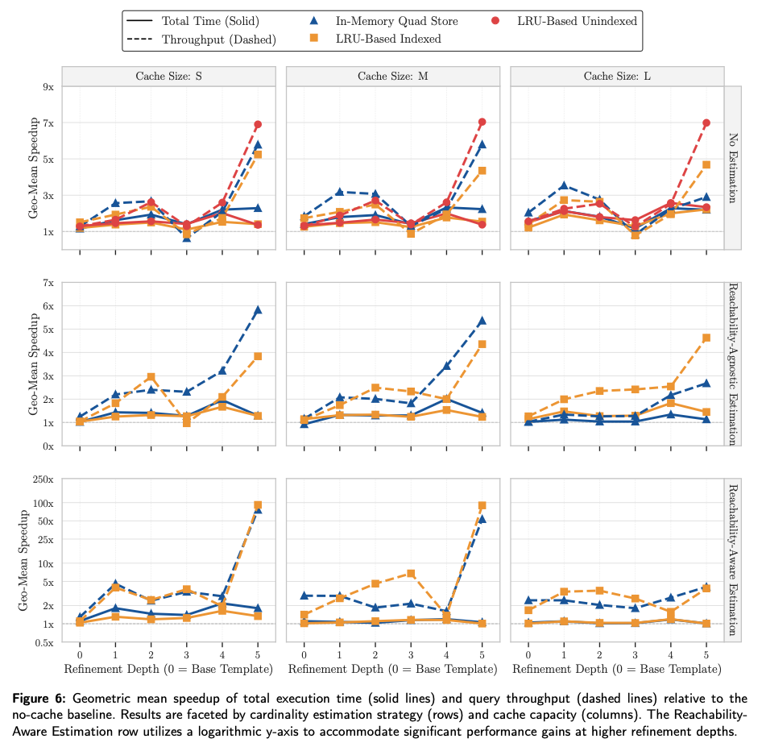
Schema alignment at query time
Partial trustworthiness of data sources
Malicious friends stating different names of others
-
Not all data (sources) may be trustworthy
How to (partially) trust a data source?
-
SWSL: Subweb specification language
Specify which subsets of sources to trust
<https://uma.ex/#me> ex:hasSpecification <#spec1>.
<#spec1> ex:appliesTo <https://uma.ex/>;
ex:scope """
FOLLOW ?friend WITH SUBWEBS {
<https://uma.ex/#me> foaf:knows ?friend.
} INCLUDE { ?friend ?p ?o. }
"""^^ex:SWSL.
Bogaerts, B., Ketsman, B., Zeboudj, Y., Aamer, H., Taelman, R., & Verborgh, R. (2024). Distributed subweb specifications for traversing the web. Theory and Practice of Logic Programming, 24(2), 394-420.
Conclusion: Query engines are a good match for integrating decentralized data
-
This requires intelligent query processing algorithms
Abstract away complexities of decentralized data
-
Trade-offs between federated querying and link traversal
Federation faster, but lacks source discovery and limited in #sources
Link traversal currently only works over documents
Need for a hybrid between federation and link traversal?
-
Active research
https://comunica.dev/: Engine for federation + link traversal
We're looking for collaborations!
Personal Retrieval and Integration team KNoWS / IDLab / UGent
-
Ruben Eschauzier
Personalized query optimization in link traversal query processing
-
Elias Crum
Storing and querying personal genome data in decentralized environments (Joint PhD with VITO)
-
Jonni Hanski
Adaptive client-side techniques in link traversal
-
Bryan-Elliott Tam
Optimizing decentralized querying using explicit data publication structures
-
Jitse De Smet
A data management approach to RDF data integration
-
Ruben Taelman (team lead)